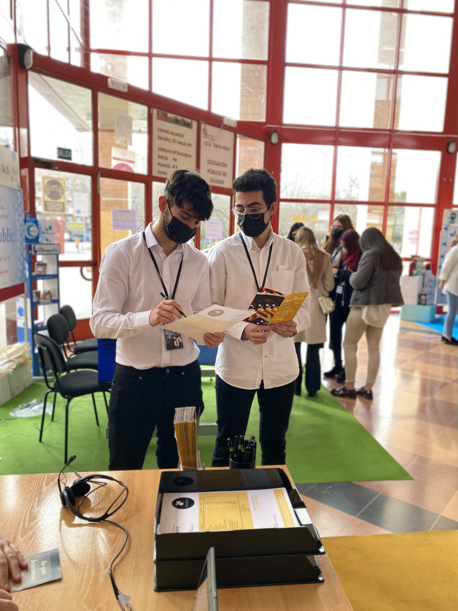
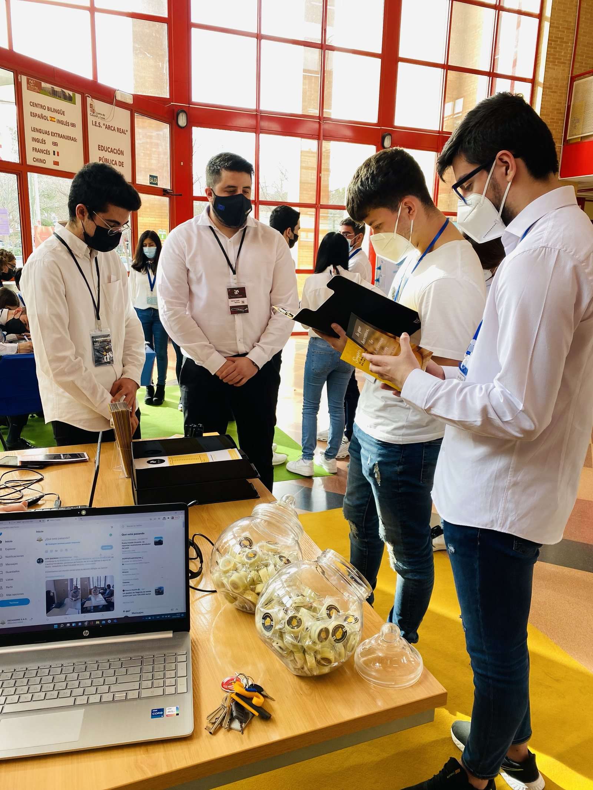
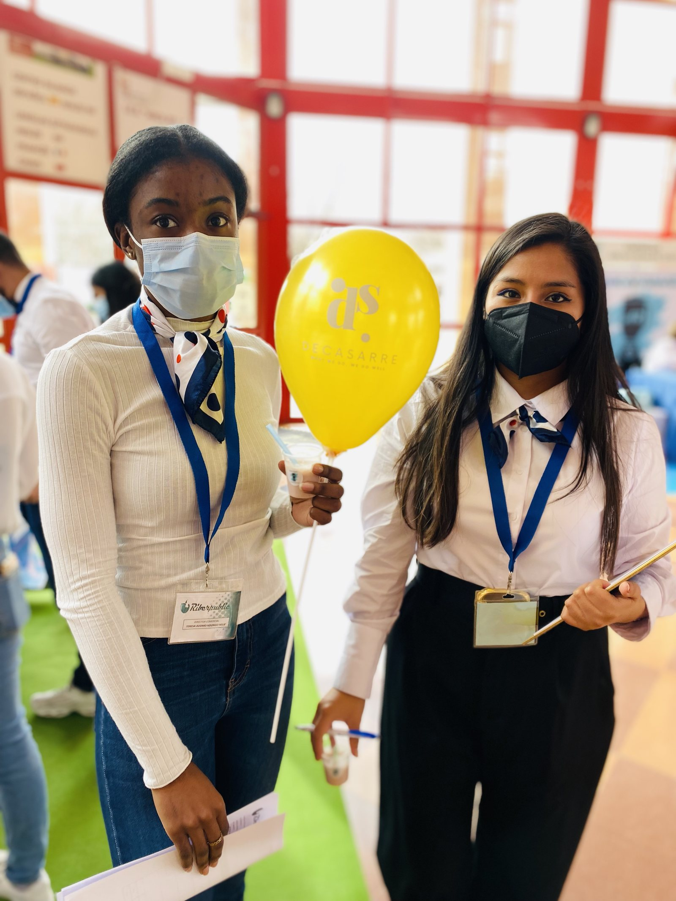
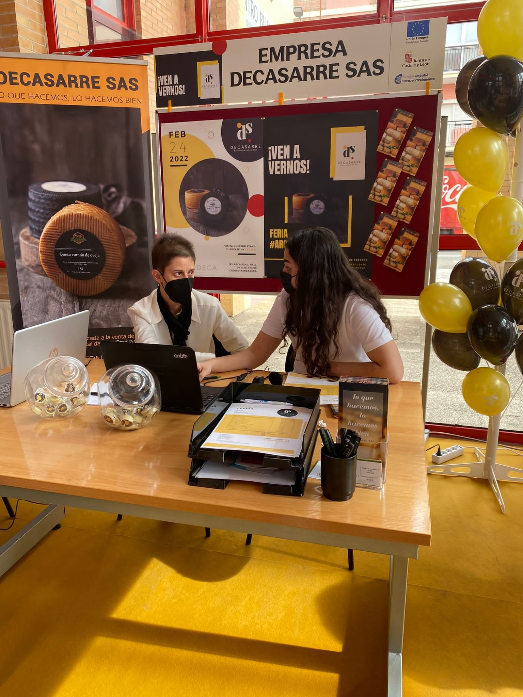
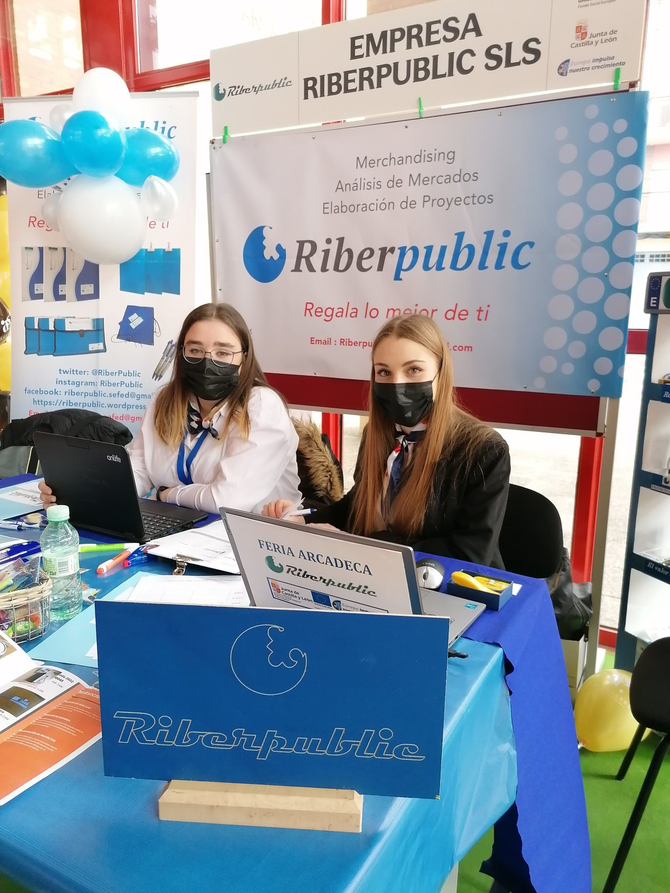
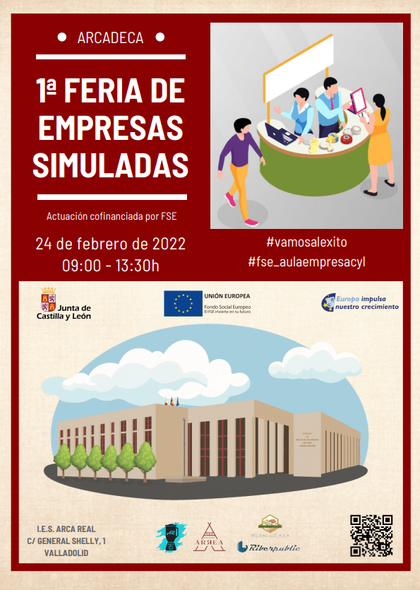

Ya os he contado antes cómo formamos a nuestro alumnado gracias a una empresa simulada, y cómo este año contamos con una nueva aula de emprendimiento para impulsar las competencias emprendedoras del alumnado. En el IES Arca Real gestionamos este año 3 empresas simuladas distintas, llevadas por diferentes profesores y gestionadas por alumnado de distintos grupos. Parte de esa experiencia de simulación incluye participar en varias ferias nacionales e internacionales, ya que pertenecemos a una red de más de 7000 empresas simuladas de todo el mundo.
Este año quisimos ir un paso más allá organizando nuestra propia feria: presencial para algunas empresas simuladas (aquí todavía hay restricciones por COVID) y en un entorno virtual para varias empresas simuladas de distintos centros de Castilla y León. Así nació la I Feria Virtual #Arcadeca. Es una colaboración interdepartamental, interciclo e intercentros, en la que el alumnado es protagonista y puede desarrollar sus competencias digitales y emprendedoras. Como era la primera vez que organizábamos este tipo de experiencia, quisimos mantenerla pequeña y local, así que solo invitamos a empresas simuladas de Castilla y León.
Nuestro alumnado de 2º de Asistencia a la Dirección, dentro del módulo de Organización de eventos empresariales, diseñó esta feria virtual, que nos permitió movernos entre stands virtuales, hacer videoconferencias, compartir vídeos, catálogos y todo lo necesario para realizar operaciones comerciales como en cualquier feria real, pero desde un entorno digital. Tanto la web de la feria, diseñada con WordPress, como el plano de la feria y los stands, la campaña en redes sociales y todas las comunicaciones fueron gestionadas por el alumnado y su empresa simulada Arrea Eventos.
En la feria virtual, los visitantes podían navegar entre los distintos stands gracias a la plataforma virtual que el alumnado diseñó y creó con Genial.ly. Cada stand tenía vídeos de presentación y folletos que el alumnado de las distintas empresas simuladas creó con diferentes herramientas digitales. Durante la feria, los empleados de las empresas simuladas se conectaban por videoconferencia (Zoom, Teams, Google Meet…) para establecer relaciones comerciales con otras empresas simuladas. Desde los stands también se podía acceder a las distintas tiendas online de las empresas simuladas, como esta, que permite reproducir operaciones de comercio electrónico.
El 24 de febrero celebramos por fin en nuestro centro la I Feria de empresas simuladas ArcaDeca. Tuvimos tres stands en el hall del instituto para cada una de estas empresas simuladas: Arcas Reales (alumnado de 2º de Gestión Administrativa), Decasarre (gestionada por alumnado de 2º de Administración y Finanzas) y Riberpublic (del IES Ribera de Castilla). Además, se organizaron varios talleres para los visitantes: diseño y decoración de stands por la empresa Diventia Eventos (empresa real), taller de redes sociales por Arrea Eventos (empresa simulada) y un taller de impresión 3D en el aula de emprendimiento, gracias a uno de nuestros profesores.






Queremos aprovechar para agradecer la participación de otras empresas simuladas de numerosos centros de Castilla y León: Riberpublic del IES Ribera de Castilla (Valladolid), Mediof del CIFP Medina del Campo (Medina del Campo), Galiprint del IES Galileo (Valladolid) y Unives del IES Las Salinas (Laguna de Duero). Mira un breve vídeo que muestra la feria presencial y virtual.